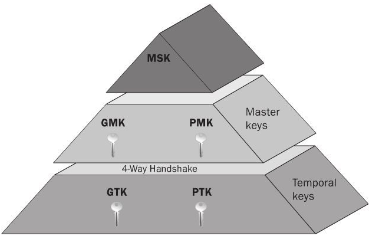
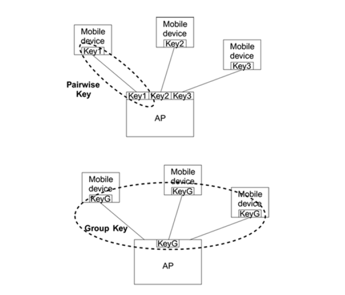
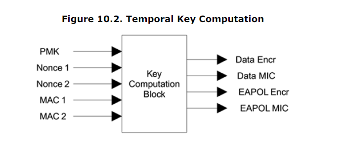
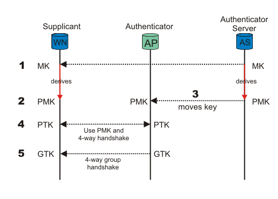
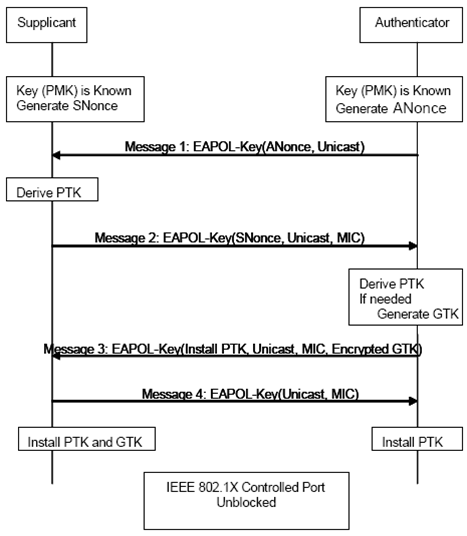
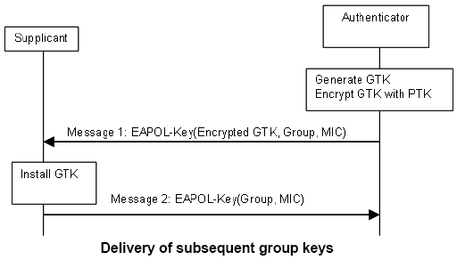

4步握手过程研究
Table of Contents
1 基础理论
1.1 概述
Both WPA2-PSK and WPA2-EAP result in a Pairwise Master Key (PMK) known to both the supplicant (client) and the authenticator (AP). (In PSK the PMK is derived directly from the password, whereas in EAP it is a result of the authentication process.) The four-way WPA2 handshake essentially makes the supplicant and authenticator prove to each other that they both know the PMK, and creates the temporal keys used to actually secure network data. Capturing the four-way handshake will not divulge(泄露) the PMK or PSK (since capturing the handshake is trivial over wireless this would be a major vulnerability). The PMK isn't even sent during the handshake, instead it is used to calculate a Message Integrity Check (MIC). You basically need to perform a dictionary or bruteforce attack on the handshake until you find a password which results in the same MIC as in the packets.
1.2 术语
MSK-Master Session Key ( or AAA Key)Key information that is jointly negotiated between the Supplicant & Authentication Server. This key information is transported via a secure channel from Authenticating Server to Authenticator.PMK-Pairwise Master KeyPMK is derived from MSK seeding material. PMK is first 256bits (0-255) of MSK. It can be derived from an EAP method or directly from a PresharedKey(PSK).GMK-Group Master KeyGMK is randomly created on Authenticator & refresh it in configured time interval to reduce the risk of GMK being compromised.PTK-Pairwise Transient Keyvalue derived from PMK,Authenicator nonce(Anonce),Supplicant nonce(Snonce), Authenticator Address, Supplicant Address. This is used to encrypt all unicast transmission between client & an AP.Unicast data sent between two parties needs to be private to those two parties. This is best accomplished by using a specific key for each pair of devices communicating. we called this a pairwise key.
GTK-Group Temporal KeyGTK is used to encrypt all broadcast/multicast transmission between an AP & multiple client statsions. GTK is derived on Authenticator & sending to supplicant during 4-Way Handshake (M3)broadcast (or multicast) data must be received by multiple parties who form a trusted group. Therefore, a key must be shared by all the members of that trusted group. This is called the group key.
Pre-shared keysPreshared keys bypass the concept of upper-layer authentication completely; you are assumed to be authentic simply by proving possession of the key.server-based keysrequires an upper-layer authentication process that allows the mobile device and an authentication server to generate matching secret keys.
1.3 Key
1.3.1 Key Hierarchy
RSN key hierarchy


对于PTK来说，每个STA与AP之间独立共享一个唯一的PTK，而对于GTK，所有 STA与AP之间共享同一个GTK。
1.3.2 PMKSA（PMK Security Association）
认证者与申请者都有可能缓存PMKSA， 它包含了一些相关状态信息，如AP的 MAC地址，PMK的生存期以及唯一的标识PMKID等。其他PMKID是根据如下公式 计算出来的一个Hash值：
PMKID = HMAC-SHA1-128(PMK, "PMK Name" | MAC_AP | MAC_STA)
When associating with an access point, the station determines if it has a valid PMK with the target access point by checking if it has a PMKSA that matches the target access point's MAC address. If such PMK does not exist, the station and the access point perform authentication using EAP. If the station determines that it shares a PMK with the target AP, then the station proposes the use of the PMK by including the PMKID in the RSN Information Element of the (Re)Association Request message. Upon reciept of a (Re)Assiciation Request with a PMKID, the access point checks whether is has a valid PMKSA with the same PMKID. If so, it begins the four way handshake exchange using the negotiated PMKSA.
在与AP进行关联或重新关联时，会先检测是否有对应的PMKSA，如果存在， 则在请求IE中包含PMKID信息，AP收到后，根据PMKID信息检测是否有对应的 PMKSA，如果存在，则使用之前协商好的PMKSA直接进入4步握手阶段。
PMKSA缓存节省的主要是4步握手之前的时间(如802.1X论证)，每次关联后， 4步握手是必须要做的。
1.3.3 临时密钥计算
PMK并不直接用于保密操作，它本身用来产生一组Key，这些Key用来保护设备 间的通信链路。有4个单独Key来保护通信链路：
- Data Encryption key (128 bits)
- Data Integrity key (128 bits)
- EAPOL-Key Encryption key (128 bits)
- EAPOL-Key Integrity key (128 bits)
这些Key称为临时Key，因为每次设备与AP关联时，都会重新产生。这些Key一 起统称为PTK(pairwise transient key)。

PMK利用认证过程中产生的生成Key的原料来产生的。对于Pre-Shared Key， 直接将其作为PMK来使用。 认证结束后，即当收到认证方发送的EAP-Success消息，双方都应该获取到了 PMK。
2 4-Way HandShake
2.1 基本步骤

Figure 8: 802.11i四次握手过程
四次握手是802.11i标准中用来在AP和客户端之间生成并管理PTK临时密钥的 交互过程，在整个过程中，AP和STA均确认对方是否持有与自己一致的PMK， 如不一致，四次握手过程就失败。
- 认证者向申请者发送消息M1, M1包含用于产生PTK的随机数Anonce，申 请者利用事先共享的PMK,Snonce和Anonce计算PTK。
- 申请者向认证者发送M2，M2中包含SNonce，并且用刚计算出的PTK中的 KCK（EAPOL-Key完整性密钥）部分对M2进行MIC认证。
- 认证者得到Snonce并利用事先共享的PMK计算出PTK，利用PTK中KCK部分 对M2进行MIC校验。如果校验失败就丢弃该M2，正确则向申请者发送M3。 M3中包含一个MIC校验，使申请者能够核实认证方拥有一个匹配的PMK。 论证者也会产生GTK信息，并通过PTK进行加密，传送给申请者。
- 申请者收到M3并校验正确后，即装入PTK，并发送M4给认证者，表示已经 装入PTK。认证者在收到M4并校验正确后也装入PTK。至此四次握手过程 完成，PTK产生并完成装载， 同时也会将收到的GTK装载。
整个步骤用如下图表示所示： 
用简单的言语解释一下，基本意思就是： PTK是两边都要对上的，而GTK是在PTK成功后，AP直接将加密过的GTK发给STA， STA再把GTK解出来。抓包看到有四个EAPOL-KEY，后两个包含AP和STA安装 GTK。
对于PTK，AP送Anouce给STA，STA收到后，自己产生一个SNounce然后结合 ANounce PMK AA和SA得出PTK，进而有MIC key然后连同一个802.1X data通 过HMAC_MD5算出MIC，STA把MIC和SNounce发给AP。AP收到Snouce后，自己 也使用相同的算法，通过SA AA SNounce ANounce计算MIC，如果这个MIC和 STA发过来的MIC是一样的，那么就说明两侧的PMK是一样的，不然过后AP就 会发出deauth给STA
3 Group HandShake
一般发生在AP要更新GTK的情况，通常由AP主导，当然STA也可以主动要求。
3.1 基本步骤
PTK成功后，两侧的PTK Key结构就确定下来了，随后AP会通过
EAPOL-KEY 把GTK发给STA，AP发一个MIC给STA，STA把KEY解出来，发一个确认信息给AP。
这个Key通过加密通道进行传输，拥有Group Key的设备才能收到从AP发送 过来的广播包。AP在发送Group Key的时候会执行如下操作：
- 产生一个256-bit的GMK(Group Master Key)。
- 得到256-bit的GTK(Group Transient Key)，临时Key从GTK中获取。
- 当AP与移动设备间的单播安全链路建立后： a)发送GTK给移动设备 b)检测接收到GTK的确认消息。

3.2 如何产生GMK？
The access point allocates a GMK simply by choosing a 256-bit cryptographic-quality random number.
3.3 如何产生临时Key？
需要两个Key：
- Group Encryption Key(128 bits)
- Group Integrity Key(128 bits)
The combination of these two keys forms a 256-bit value, the GTK. AP将会把GTK发送到与之关联的设备上。GTK由GMK值再结合nonce值和 AP的MAC地址来产生的。
3.4 Rekey
3.4.1 Rekey Intervals
WPA automatically changes secret keys after a certain period of time. The group rekey interval is the period of time in between automatic changes of the group key, which all devices on the network share. WPA changes the group key so quickly that you won't even notice the process.
3.4.2 Benefits of Rekeying
The WPA protocol uses rekeying to provide your network with increased security. Constantly rekeying the group key protects your network against intrusion, as the would-be intruder must cope with an ever-changing secret key. Older security standards like WEP do not possess this automatic rekey function, and are therefore less secure.